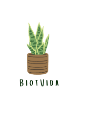
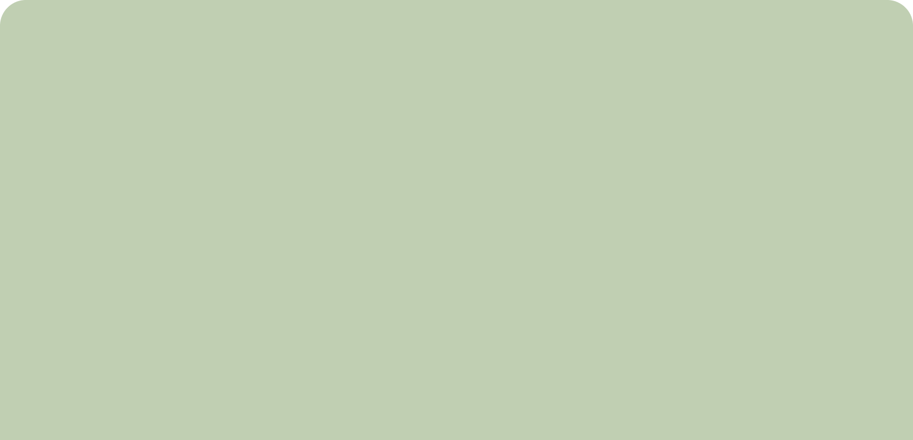

Importância da Botânica
A botânica desempenha um papel crucial em várias áreas da vida humana e do meio ambiente:
Estufa: As estufas desempenham um papel fundamental na botânica e na agricultura, proporcionando condições controladas para o cultivo de plantas em ambientes protegidos.

Indústria: Plantas são matérias-primas para várias indústrias, incluindo a de papel, têxtil, biocombustíveis e produtos químicos. A pesquisa botânica pode levar a novas aplicações industriais.